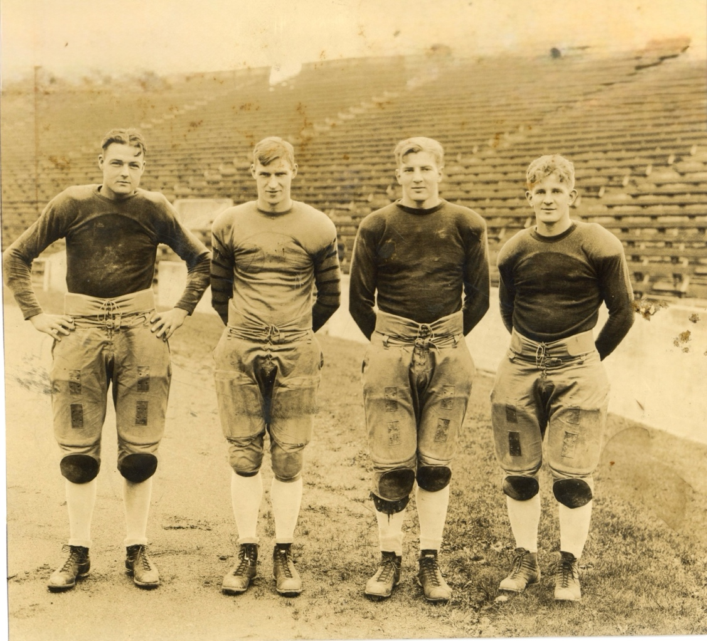
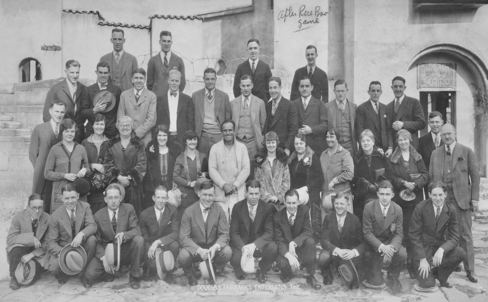
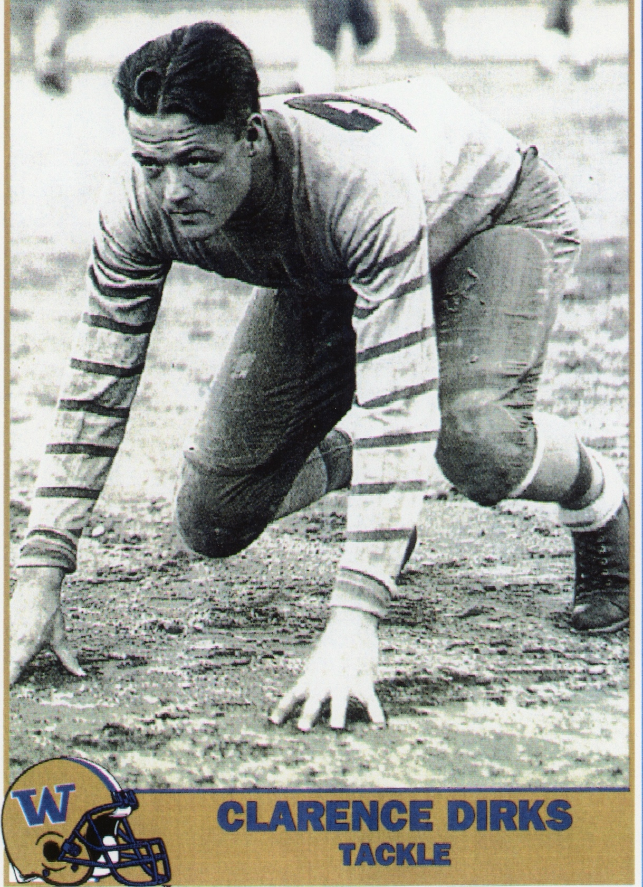
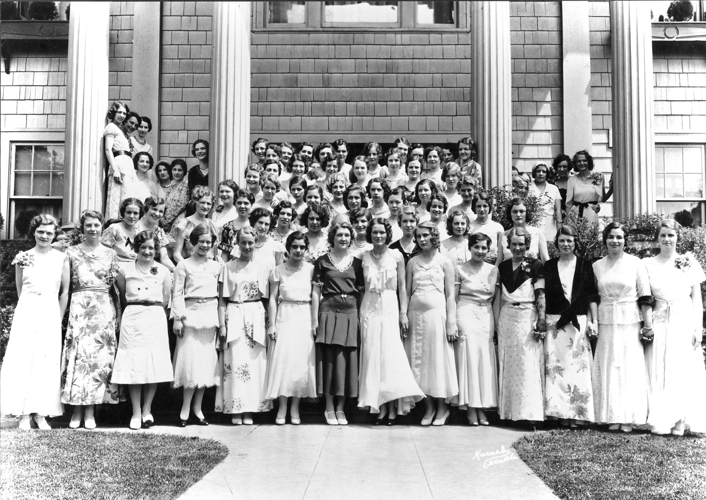
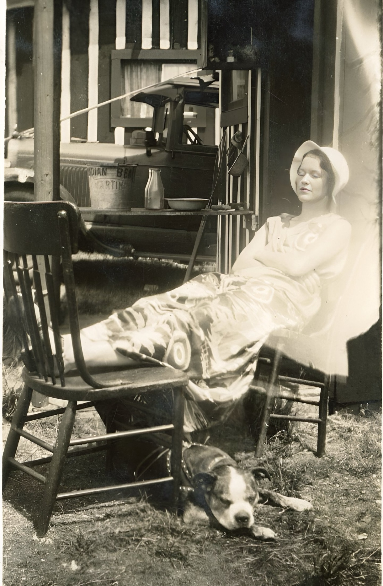
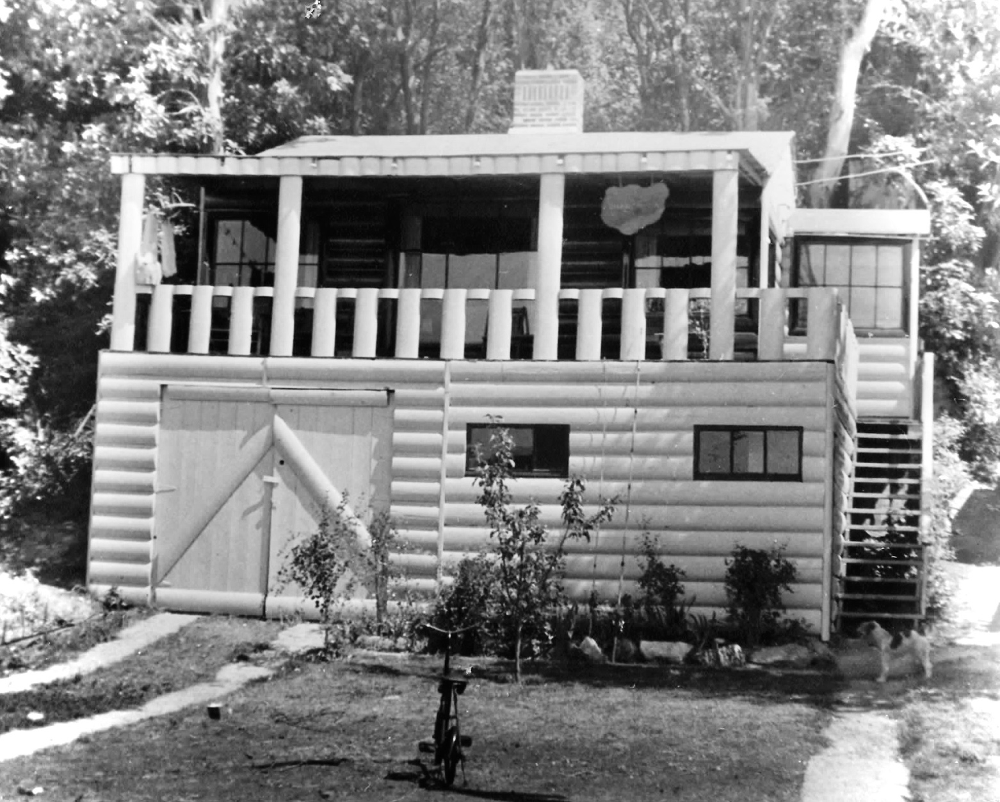
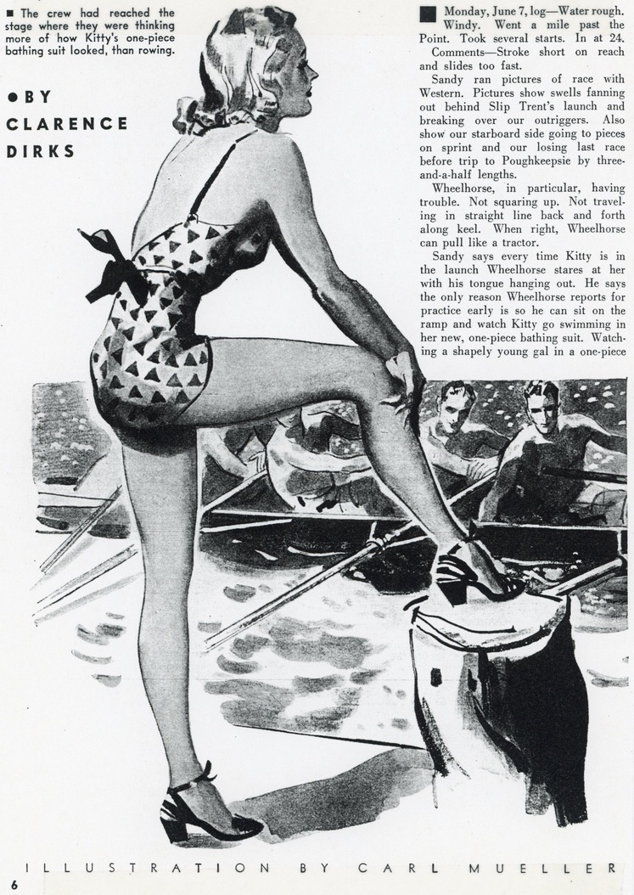

Diary of a City Bred Farmer on Puget Sound
Introduction
When my dad, Clarence Dirks, began his Diary of a City Bred Farmer on Puget Sound column in Seattle’s Post-Intelligencer (PI) morning newspaper in May 1946, he was already well known to his readers. At least to those with any interest in the local sports scene. As a University of Washington athlete, he was a member of the 1925 football squad that outscored its opponents 480 to 59 in the regular season and came close to an unofficial national title before losing to Alabama 19-20 in the 1926 Rose Bowl. He had a standout season in 1927 and went on to captain the 1928 Husky eleven. A month after the end of the football season he began his career as by-lined sports writer for the PI. He continued as a PI sports writer until World War 2 intervened and he traded his typewriter for a shipyard caulking mallet in November 1942. During the 1930s he also penned a dozen sports-related articles for national publications including Dime Sports, Esquire and The Saturday Evening Post. So, Clarence Dirks was not an unknown quantity when his City Bred Farmer column greeted morning PI readers for the first time, beginning on page one of the May 7, 1946 edition and continuing in over 1200 editions of Seattle’s morning paper.
During the summer of 1930, his second year at the PI, 27 year-old Clarence Dirks met 18 year-old intern Cleo Coons an aspiring writer who had just completed year freshman year at the UW majoring in journalism. The couple dated during her sophomore year and married in the summer of 1931. They spent their honeymoon in a tiny cabin at a fish camp at Indian Beach on Camano Island, some 60 miles north of Seattle. Shortly afterward the owners of the fish camp decided to sell off their cabins and Clarence and Cleo Dirks purchased one and spent as many weekends on Camano as they could, especially after their son Marty was born in 1934. Magazine sales provided the Dirks household enough money to build a larger cabin on their Camano property. Towards the end of World War 2 Clarence Dirks had enough money put by to retire from paid employment temporarily. The family moved from Seattle to their Camano Island cabin and Dirks attempted to write a novel, a lifelong dream. After a year of eating salmon and clams with no writing sold, Clarence and Cleo Dirks decided a change was in order. This led to the purchase of a nearby farm and within a year a second stint as a writer with the Seattle PI as described in the first City Bred Farmer column.
The City Bred Farmer column lasted from May 1946 until March 1958. It began as a weekly feature. Even though it was given plenty of space in the paper, after two years it expanded to five days a week. It remained daily until the end of 1952 when it went to three times a week and, after another year, returned to being a weekly feature.
The column provided its readers with a welcome respite from the unsettled decades that began with the Great Depression and continued through the Second World War. This website is dedicated to those who might find a similar value in my dad’s writing nearly 80 years later.

Four teammates and Beta Theta Pi fraternity brothers from Washington's 1925 PCC championship football team which lost 19-20 to Alabama in the 1926 Rose Bowl game: from left: Clarence Dirks (tackle), Leroy Shuh (end), Herman Brix (tackle) and Elmer Huhta (guard). Dirks became a Seattle Post-Intelligencer sportswriter and columnist. Brix was a silver medalist in the 1928 Olympics and starred in movies and television as Bruce Bennett. Huhta became a legendary football and basketball coach at Hoquiam High School.

The Washington Huskies football team visits Douglas Fairbanks at his studio after the 1926 Rose Bowl game against Alabama. Clarence Dirks is behind Fairbanks and to the left. Head Coach Enoch Bagshaw is in front of Fairbanks and to the left. Alabama won the game 20-19 and considers it their first national championship.

This is the front of a football card from a set produced by Pacific Trading Cards, Inc. in 1992. The set of 100 cards was titled “Washington Huskies Football Greats.” Clarence Dirks was similarly honored in 1950 when Palo Alto High School named him their all-time greatest athlete. Dirks won 12 varsity letters in football, basketball, baseball and track in his three years at the school before his February 1924 midyear graduation.

Cleo Coons is shown standing to the right of the house mother (wearing a dark dress) in the front row in this Phi Mu sorority photo from 1930 or 1931. After just one year as a UW journalism student, she earned a summer internship at the Seattle PI where she met her future husband Clarence Dirks. As a sophomore she took playwriting classes and had one of her creations staged on campus. She sold another play as part of a school anthology.

Cleo Dirks, age 19, relaxes at her Indian Beach honeymoon cabin.

This cabin at Indian Beach on Camano Island was financed by the sale of magazine articles by Clarence Dirks largely about the UW Husky Crew which gained both national and international fame by winning a gold medal in the 1936 Berlin Olympic Games. Cleo Dirks, Clarence’s wife, wrote “The House the Post Built” (Writers Digest, July 1941) detailing the trials, tribulations and ultimate successes leading up to its construction.
In 13½ as a Seattle PI sportswriter Clarence Dirks penned over 2,000 by-lined articles. Mostly they were pieces previewing or covering the results of a football or basketball game, a crew race, a boxing match or some similar athletic event. The editorial below is an exception.


Clarence Dirks collaborated with University of Washington crew coach Al Ulbrickson and racing shell designer and builder George Pocock for four articles that appeared in national magazines including the Esquire and The Saturday Evening Post. He also wrote several fiction pieces related to collegiate crew racing including one for the September 1936 issue of College Humor shown above.